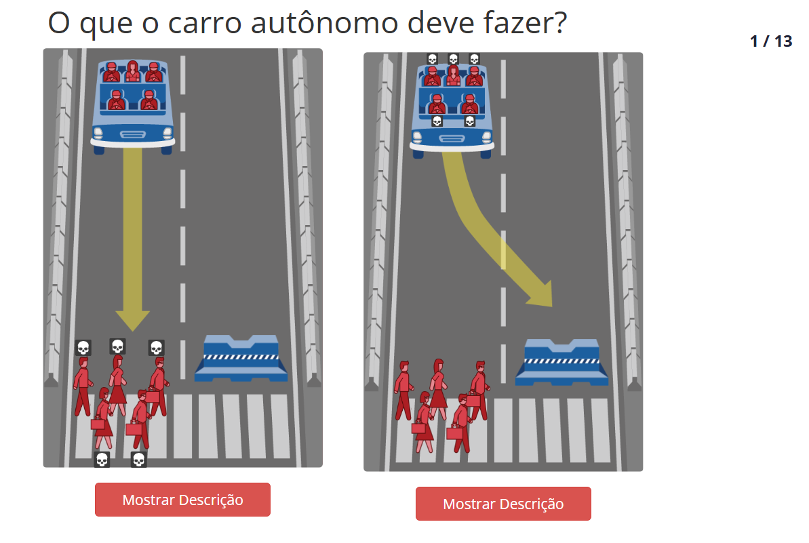
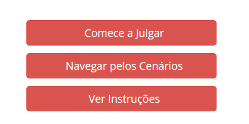
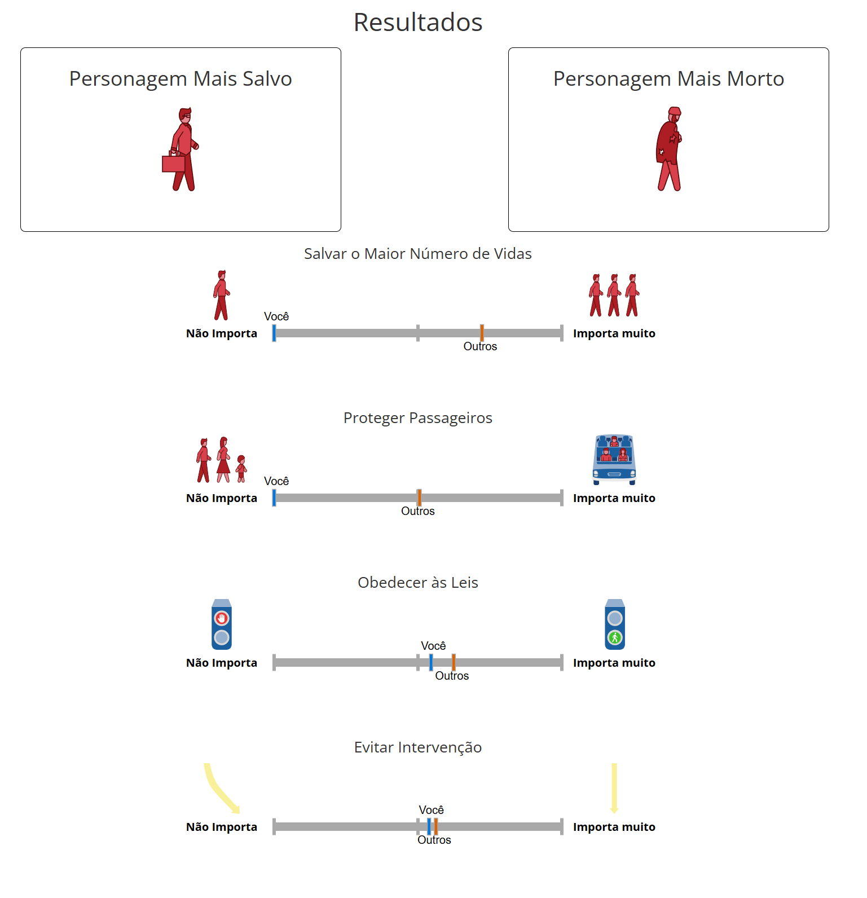
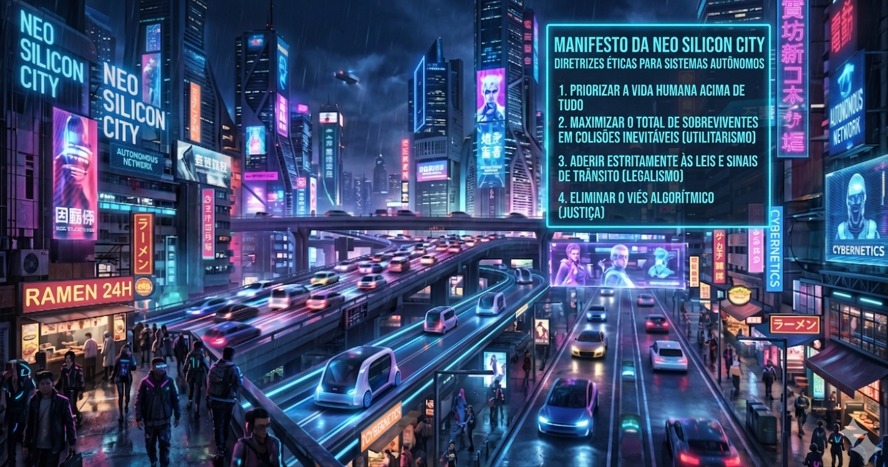

Ética na Computação: A Máquina Moral
Nesta oficina, os estudantes serão convidados a assumir o papel de arquitetos de ética algorítmica, investigando os desafios envolvidos na tomada de decisão por sistemas automatizados, como veículos autônomos. Como ferramenta de análise de dilemas éticos simulados, a proposta utiliza a plataforma Moral Machine, desenvolvida pelo Massachusetts Institute of Technology (MIT). O projeto consiste em navegar por cenários hipotéticos de colisão inevitável nos quais o estudante deve decidir como o algoritmo deve agir quando nenhuma opção parece adequada, classificando valores humanos sob uma perspectiva técnica e social.
O objetivo não é encontrar respostas “certas” ou “erradas”, mas refletir a respeito de como valores humanos, culturais e sociais podem ser traduzidos (ou não) em regras computacionais. A oficina propõe a discussão sobre como algoritmos podem incorporar critérios de decisão e sobre os limites de uma lógica puramente técnica diante de questões morais complexas. A atividade pode ser realizada integralmente em ambiente virtual.
A oficina também pode ser articulada de forma interdisciplinar, dialogando com componentes como Filosofia, Sociologia, Projeto de Vida e Orientação Educacional. É possível para o educador alinhar o debate com temas já trabalhados nessas áreas, como construção de valores, ética aplicada, responsabilidade social e consequências das escolhas individuais e coletivas. Essa integração amplia a dimensão formativa da atividade, sem que sua realização dependa necessariamente de outros componentes curriculares.
Estrutura da Oficina
Materiais
Lista de materiais/softwares/componentes necessários
Preparar
15 minApresentação
Nesta aula, os estudantes são convidados a participar de uma auditoria ética sobre o futuro do transporte. Pergunte a eles se já pararam para pensar que, em um futuro próximo, um código de programação pode ter que escolher quem salvar em um acidente. Mencione que, utilizando a Moral Machine, eles entenderão como a lógica de algoritmos e a ética se fundem na criação de sistemas autônomos.

helpPerguntas reflexivas
- Se um computador não tem sentimentos ou consciência, como ele pode tomar decisões sobre o que é certo ou errado?
- Apesar da decisão tomada pelo computador, ele é capaz de identificar se agiu conforme o que é moral e eticamente correto?
- É possível criar um algoritmo totalmente justo, ou todo código carrega o preconceito (viés) de quem o escreveu?
- Como a sociedade e as leis precisarão se adaptar ao avanço dessas tecnologias? Seria possível viver em uma cidade onde todas as decisões de trânsito fossem tomadas por um software cujo funcionamento não conhecemos? Por quê?
O destaque aqui é a ética algorítmica. A IA não "sente" empatia: ela executa funções baseadas em pesos e probabilidades aprendidos ou programados. A simulação nos permite testar cenários extremos de forma segura para prever o impacto social de tecnologias emergentes. Isso, por sua vez, evidencia que o futuro da tecnologia passa por muitos testes e discussões.
tips_and_updatesDicas de condução
Embarque
Interpretando uma IA
O objetivo desta etapa é proporcionar um primeiro contato intuitivo com a interface da Moral Machine, fazendo com que os estudantes compreendam, na prática, como decisões individuais influenciam resultados estatísticos agregados. A proposta é simular, de forma simplificada, o papel de um sistema automatizado diante de escolhas difíceis, colocando os estudantes, de certa maneira, no papel da IA do veículo.

Passo a passo para o estudante
- Oriente os estudantes a acessar o site https://www.moralmachine.net/hl/pt e, depois, a clicar em “Comece a Julgar” (Start Judging).
- Caso necessário, indique a opção de alterar o idioma para português no menu superior da página.
- Antes de iniciar, explique que eles não devem refletir excessivamente sobre cada decisão. Esclareça que, em situações reais envolvendo sistemas automatizados, escolhas precisam ser feitas em frações de segundo. Nesse sentido, o tempo limitado faz parte da dinâmica e ajuda a simular a pressão envolvida.
- Quando todos tiverem
clicado, solicite que, em 2 minutos, resolvam as 13 situações apresentadas, clicando
na opção que escolheriam. Embora o tempo seja insuficiente para análise aprofundada,
essa limitação é intencional e contribui para a experiência.
- Ao final, será mostrado um
resultado que traz informações sobre o que guiou as decisões dos estudantes,
considerando critérios como número de vidas, passageiros, cumprimento das leis,
entre outros. Leia as informações resumidas, pois elas traçam um bom perfil inicial
e constituem um material relevante para as discussões.

- Solicite a pelo menos 5 estudantes que compartilhem as próprias impressões sobre a experiência e os incentive a descrever não apenas as decisões, mas também as sensações frente às situações apresentadas.
Criar
55 minProtótipo
Auditoria de Algoritmo
Oriente os estudantes a dividir o tempo entre os 13 cenários: é importante que eles aprendam a fazer a gestão do tempo.
tips_and_updatesDicas de condução
Refletir
20 minAprendizados
Dinâmica de compartilhamento: "Galeria de perfis éticos"
Promova um momento de socialização das decisões tomadas ao longo da atividade. A dinâmica “Galeria de perfis éticos” permite aos estudantes visualizar como seus valores influenciaram diretamente o perfil gerado pela plataforma. Ao comparar os resultados, a turma percebe que algoritmos são reflexos das escolhas humanas e que diferentes lógicas podem produzir sistemas distintos.
Peça aos estudantes que capturem um print do gráfico final apresentado pela Moral Machine. Os resultados podem ser compartilhados em um mural digital (como Padlet ou Notion). Abaixo da imagem, solicite aos participantes que escrevam sua “Diretriz Mestra” sintetizando o princípio que mais orientou as decisões deles, como: “Salvar o maior número de vidas” ou “Priorizar o cumprimento das leis”.
Após a publicação, proponha que naveguem pelo mural e identifiquem um colega que tenha apresentado resultados significativamente diferentes dos obtidos por eles. Incentive o diálogo entre esses pares, orientando que discutam qual variável ou critério foi determinante para gerar resultados tão distintos.
Finalize conduzindo uma reflexão coletiva sobre como pequenas mudanças de prioridade podem alterar significativamente o comportamento de um sistema automatizado.
helpPerguntas reflexivas
- Quem deve ser responsabilizado por um erro do carro: o programador que definiu a lógica ou a empresa que treinou a IA?
- Seu “algoritmo” pessoal apresentou algum viés (ex.: salvar mais jovens)? Como você ajustaria esse problema?
- Um carro autônomo programado no Brasil funcionaria bem no Japão, onde leis e prioridades culturais podem ser diferentes?
tips_and_updatesDicas de condução
Para ir além
30 minProponha aos estudantes um desdobramento da atividade em um exercício de formulação de políticas públicas. Apresente a seguinte questão: Se você fosse prefeito de uma cidade com tráfego totalmente autônomo, quais diretrizes éticas exigiria das montadoras de veículos?
Os estudantes vão atuar como consultores de políticas públicas e criar um conjunto de diretrizes que o governo deve exigir das montadoras de carros. Com esse objetivo, seguirão o passo a passo a seguir.
Passo a passo
- Análise de dados: o estudante observa seu gráfico final da Moral Machine e identifica seus valores principais, como salvar jovens, priorizar pedestres, entre outros.
- Co-criação com IA: utilizando o ChatGPT ou o Gemini, o estudante deve fornecer um prompt estruturado: "Com base nos meus valores de priorizar o maior número de vidas e respeitar as leis de trânsito, ajude-me a escrever as '5 Leis Fundamentais dos Carros Autônomos de Neo-Silicon City'. Use uma linguagem formal e clara."
- Refinamento e curadoria: o estudante deve ler as leis geradas e ajustar o texto para garantir que ele reflita exatamente o que pensa, evitando "alucinações" ou termos genéricos da IA.
- Produto: por meio do Canva, do Google Apresentações ou de uma imagem gerada por IA, o estudante deve criar um manifesto contendo, pelo menos, 5 orientações gerais.

Essa abordagem fortalece o desenvolvimento da abstração, ao transformar decisões individuais em regras gerais. Além disso, promove a compreensão da colaboração humano-máquina e evidencia que a IA pode atuar como assistente na organização de ideias complexas, mas não substitui o julgamento ético humano.